Presentation & Overview
During my time on Concordia Formula Racing I have worked on two battery packs. In my first year (2024) I assembled the pack and printed board mounts. In 2026 I fully designed a custom 369.6 V, 88S4P pack rated for roughly 88 kW. Compared to the 2024 pack it is 20 kg lighter, uses higher energy density modules, and integrates busbars that slot into place as the lid is inserted — a design-for-assembly feature that cuts build time and removes a class of assembly errors. Below are photos from assembly.
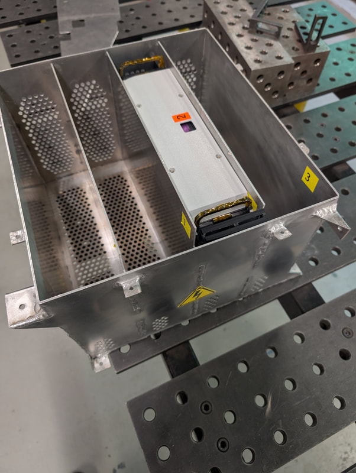
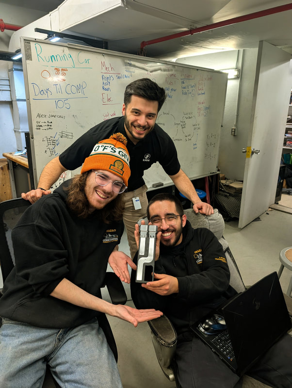
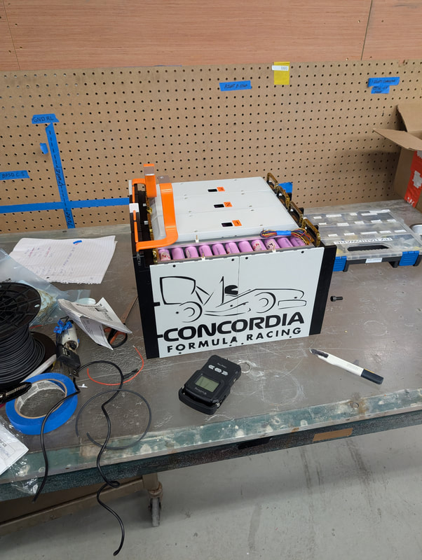
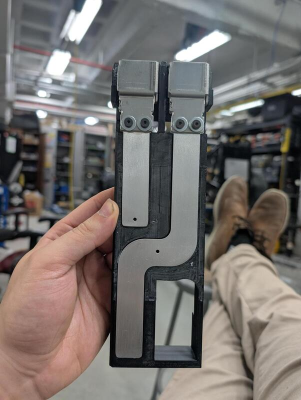
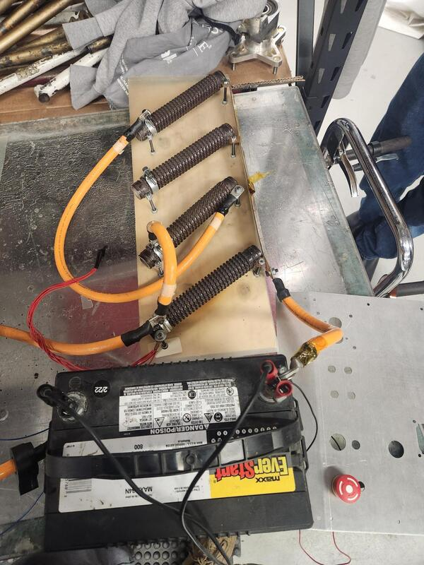
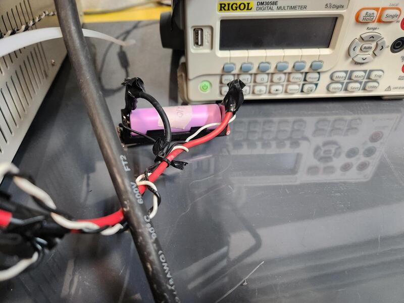
Responsibilities
As High Voltage Lead, my direct responsibilities included:
- Cell selection
- We evaluated 50+ cells, using Excel to build candidate pack configurations and optimizing for our peak voltage limits, target capacity/energy, target power, and lowest internal resistance.
- HPPC testing
- We performed Hybrid Pulse Power Characterization (HPPC) discharging cells at different states of charge so we can curve fit our 2RC model and extract resistance values across the SOC range.
- DCIR testing
- Used to sort parallel strings of cells for a balanced pack; combined with the capacity sort, this yielded a very balanced pack around a 10 mV delta after multiple charge/discharge cycles.
- Characterizing cells using an e-load and oscilloscope
- Generating RC models for the cells
- Modelling the cells' thermal characteristics in Ansys
- High-temperature material testing
- Mechanical pack design
- Fuse design testing
- Ensuring high voltage safety
Initial Cell Testing and Selection
📊 preliminary_cell_selection.xlsxBefore ordering cells, I spent significant time researching both the available cell options and the electrical requirements of our pack. I reviewed roughly 150 different cells, ranging from 18650 to 21700 formats, and across chemistries including NMC and LiPo. After comparing performance data and application constraints, I narrowed the focus to 21700 NMC cells. I selected NMC chemistry because it offers strong discharge capability without sacrificing too much energy density. The 21700 format was chosen to take advantage of newer tabless designs, where the jelly roll is welded directly to the can. This reduces internal resistance, improves thermal performance, and supports higher discharge rates while increasing overall energy density.
From the cells shortlisted, I generated all reasonable series and parallel configuration combinations and filtered them against our system constraints: a maximum motor controller voltage of 400 V, an 80 kW power requirement, minimal voltage sag under load, low mass, and strong high current discharge behavior (preferably with flatter, more logarithmic discharge curves).Based on that analysis, I narrowed the selection to three candidates: the RS50, BAK 45D, and Molicell P50B. These were the top three cells that met our requirements, and I proceeded to purchase engineering samples for testing and validation.
Once the samples were received, I spent significant time characterizing them. I ran simulated endurance cycles to mimic race conditions and quantified heat generation, DCIR, and usable capacity under realistic load profiles. This allowed me to compare performance beyond just the datasheet specifications and evaluate how each cell behaved in conditions similar to actual competition use.
Although the BAK 45D appeared to be the weakest option on paper, it ultimately performed the most consistently in testing. Its measured results aligned closely with the manufacturer’s datasheet values, and after running a statistical analysis across multiple samples, it showed the lowest variance of the three candidates. That consistency made it a strong contender, especially from a pack reliability and balancing standpoint.
Testing & Automation
🗜 eload_testing.zipI authored Python scripts that automated the DCIR and capacity test cycles on the electronic loads, eliminating manual data transcription and cutting the cell characterization timeline by roughly 40%. I developed this code to test lithium ion battery cells for cell selection and to generate RC models. The structure is modular to keep it organized and easy to maintain. The low level module handles all serial communication, including how bytes are packed into command messages and how checksums are calculated and verified. This ensures reliable communication with the electronic load. On top of that, I created an operating functions layer that contains reusable control functions, such as setting a constant current to a specified amperage. This separates the hardware command logic from the actual test procedures, which keeps the individual test files cleaner and easier to read. For example, the DCIR test file focuses only on the sequence required to measure internal resistance, while calling the operating functions to control the load and read measurements. Finally, the high level file determines which test mode is active, manages data logging, and ensures the electronic load is safely turned off if an error occurs. This structure improves readability, makes debugging easier, and ensures both data integrity and hardware protection during testing
I also created a features_definition file to centralize all tunable parameters, such as voltage cutoff, packet length, and battery capacity. This made it easy to adjust test settings without modifying core logic. In that same file, I defined the key global variables used across modules so it was clear which values were shared and tracked throughout the program. Within the low level module, I implemented utility functions for converting integers to byte arrays (e.g., int32 to bytes), calculating checksums, and validating responses from the electronic load to ensure a complete packet was received. I also focused on making the serial communication robust. Since serial links can intermittently drop packets, I added a “force” command option for critical operations, specifically for safely turning off the electronic load at the end of a test. If a full response was not received, the system would continue retrying until confirmation was obtained. For all other commands, a protection mechanism was implemented: if 50 consecutive messages were missed or invalid, the program would stop execution and shut down safely. This balanced reliability with fault detection and hardware protection.
DCIR Testing
For my DCIR testing, I followed IEC 61960-2330 so my results would be comparable to manufacturer data. The test procedure was a 0.2C discharge for 10 seconds, followed by a 1C pulse for one second. I calculated ΔR from the change in voltage and current between those two points and used that as the cell’s internal resistance. At first, I had issues with voltage accuracy. The electronic load was measuring voltage at its own terminals, and since I was pulling around 5 A, the resistance of the test leads caused a noticeable voltage drop. Because the cell’s internal resistance is already very small, even a small additional drop in the wires significantly affected the results. To fix this, I enabled remote voltage sensing so the load measured voltage using separate high impedance sense wires. I placed these as close as possible to the cell terminals to reduce error. Even then, I couldn’t measure exactly at the true terminal interface, so some small fixture related voltage drop remained. In the end, I prioritized repeatability over absolute accuracy. I soldered the sense wires to fixed locations on my test setup so every cell was measured the same way. Since the data was mainly used for comparing and sorting cells rather than matching an exact published value, consistent and repeatable measurements were more important than eliminating every millivolt of error.
Capacity Testing
📄 capacity_test.txtTo sort the cells by capacity, I first analyzed our race data from the previous season and scaled it to reflect this year’s updated electrical architecture. I also reviewed available data from top performing teams to understand their average current demands. Based on those comparisons and the performance targets our team set at the beginning of the year, I estimated the required average current per cell. This represented an increase compared to the previous season, but it was within a realistic operating range.
Once I established a target average current draw, I programmed the electronic load to discharge each cell at that current. Testing at the expected operating load allowed me to capture the effects of Joule heating and voltage sag under realistic conditions. This approach provided a more representative baseline than performing very low current discharge tests, which can overestimate usable capacity. By testing under load, I was able to better evaluate how each cell would actually perform in the pack and make more informed sorting decisions.
To confirm the pack sizing simulations the team built at the start of the year, I validated them against our coast down testing comparing the modelled vehicle road load and energy demand to measured data at our targeted endurance speeds. The model agreed to within 5%, giving confidence that the average current and energy assumptions used to size the pack were accurate.
HPPC Testing
📄 hppc_file.txtLater in the year I developed an SOC (state of charge) estimation model that tracks within ±1% across the full SOC range. I started by reviewing literature on equivalent circuit modeling to determine whether a 1RC or 2RC model would be more appropriate. There is still some debate on when each model outperforms the other, but I ultimately chose to use a 2RC model for electrical SOC estimation and a simpler 1R model for thermal calculations. For thermal modeling, the difference in predicted power dissipation between a 1R and higher order model is relatively small. Most literature suggests that the cell’s thermal mass behaves like a large capacitor, smoothing out fast electrical dynamics that are neglected in a lower order model. Given our application and computational constraints, this was a reasonable tradeoff.
To identify the electrical parameters, I performed HPPC (Hybrid Pulse Power Characterization) testing. The procedure involved applying a 1C discharge pulse for 10 seconds (assuming SOC remains approximately constant over that short duration), followed by a 40 second rest period. I then applied a 0.75C charge pulse for 10 seconds, again assuming negligible SOC change. The voltage response from these pulses was used to curve fit the parameters of a 2RC equivalent circuit model.
After characterizing one SOC point, I performed a 1C discharge until the cell reached 10% lower SOC than the previous step. I then allowed the cell to rest for approximately one hour to minimize voltage relaxation effects before repeating the pulse sequence. This process was repeated in 10% SOC increments to capture how internal resistance and time constants vary across the discharge curve.
Ideally, this characterization would also have been repeated across multiple temperatures to capture thermal dependency in the model parameters. However, due to budget and equipment constraints within the program, temperature dependent testing was not feasible at the time. Listed below is the source where we got our standard for HPPC testing.
📄 HPPC testing standard (reference)SOC Algorithm
Using the 2RC parameters extracted from HPPC testing, I implemented and compared three SOC estimation methods in MATLAB: pure coulomb counting (baseline), a voltage-corrected complementary filter (“weighted sum”), and an Extended Kalman Filter that fuses coulomb counting with the OCV–SOC curve. Each is validated against logged endurance data by comparing the model’s predicted terminal voltage to the measurement (RMSE).
📄 soc_estimation.mShow full MATLAB source
clear;
%% DATA %%
%ENDURANCE_DATA = readtable('cage_eload_testing_enduranceSIM.xlsx', 'Sheet', 'Bak45D-3');
ENDURANCE_DATA = readtable('EnduranceResults.csv');
%ENDURANCE_DATA = readtable('S1_#4226_20240615_163852-1.5FOS.csv');
time = ENDURANCE_DATA.Var6;
voltage = ENDURANCE_DATA.Var3;
I = -ENDURANCE_DATA.Var4;
%time = ENDURANCE_DATA.time;
%I = -ENDURANCE_DATA.current;
%voltage = ENDURANCE_DATA.voltage;
Ri_table_discharge = [0.0079,0.0066,0.0065,0.0056,0.0054,0.0062,0.0062,0.0063,0.0068,0.0074,0];
Ri_table_charge = [0.0084,0.0062,0.0061,0.0057,0.0061,0.0058,0.0056,0.0032,7.10E-03,0.0081,0];
R1_table_discharge = [0.0045,0.0024,0.0028,0.0024,0.0021,0.0019,0.0019,0.002,0.0032,0.0049,0];
R1_table_charge = [7.94E-06,0.0019,0.0018,0.0015,0.0014,0.0013,0.0013,0.0033,0.0102,0.011,0];
R2_table_discharge = [0.0274,0.0092,0.0126,0.0142,0.0074,0.0098,0.012,0.0167,0.0781,0.1063,0];
R2_table_charge = [0.009,0.0058,0.0066,0.0066,0.0049,0.0046,0.0047,0.005,0.003,0.004,0];
C1_table_discharge = [625.5498,1.0884e+03,1.3760E+03,671.7873,447.4289,1.46E+03,1.59E+03,1.94E+03,1.75E+03,697.3229,0];
C1_table_charge = [629.4704,653.2170,732.6093,516.2969,1.31E+03,707.6551,411.8151,13.8447,1.46E+03,898.8253,0];
C2_table_discharge = [2.05E+03,2.9757e+03,3.2006E+03,2.65E+03,3.27E+03,3.60E+03,3.37E+03,2.97E+03,2.23E+03,1.25E+03,0];
C2_table_charge = [700.7608,2.5740e+03,2.3650e+03,2.09E+03,3.42E+03,2.54E+03,2.29E+03,1.93E+03,1.33E+04,6.06E+03,0];
start_time = 2;
end_time = 9189;
idx = (time >= start_time & time <= end_time);
t = (start_time:0.01:end_time)';
%I = interp1(time(idx), I(idx), t, 'linear', 'extrap');
%[time_unique, ia] = unique(time); % keep only unique time entries
%voltage_unique = voltage(ia); % match the voltage values
%voltage_interp = interp1(time_unique, voltage_unique, t, 'linear');
OCV_lookup = [2.42,3.17577,3.36868,3.52009,3.62396,3.74948,3.84225,3.93877,4.05245,4.0853,4.18972]; % data from hppc test
SOC_lookupR = linspace(0,1,11);
figure
plot(voltage(6:9000), 'b-');
hold on
Q = 4.5 * 3600; %battery charge
SOC_lookupR = linspace(0,1,11);
%SOC_lookup = linspace(0,1,21);
%OCV_lookup = [2.42,2.6,3.17577,3.3,3.31,3.36868,3.37,3.52009,3.6,3.62396,3.7,3.74948, ...
% 3.8,3.84225,3.9,3.93877,4,4.0,4.0,4.15,4.18997]; % data from hppc test
OCV_lookup = [2.42,3.17577,3.36868,3.52009,3.62396,3.74948,3.84225,3.93877,4.05245,4.0853,4.2]; % data from hppc test
%OCV_lookup = [2.5911,2.8401,3.0691,3.2781,3.4671,3.6361,3.7851,3.885,3.925,4.023,4.098]; % data from andrew
SOC = 1;
%% WEIGHTED SUM %%
%%%%%%%%%%%%%%%%%%%%%%%%%%%%%%%%%%%%%%%%%%%%%%%%
Vrc1 = 0; Vrc2 = 0;
Vs = zeros(size(t));
SOC_a = zeros(size(t));
SOC_an = zeros(size(t));
SOC_coul = zeros(size(t));
for k = 1:(length(time)-2)
dt = time(k+1)-time(k);
% if dt<0.12
% dt=0.2;
% end
SOC_index = round(10 - SOC*(10))+1;
if I(k) > 0
Ri = interp1(SOC_lookupR, Ri_table_charge, 1-SOC, 'linear', 'extrap');
R1 = interp1(SOC_lookupR, R1_table_charge, 1-SOC, 'linear', 'extrap');
R2 = interp1(SOC_lookupR, R2_table_charge, 1-SOC, 'linear', 'extrap');
C1 = interp1(SOC_lookupR, C1_table_charge, 1-SOC, 'linear', 'extrap');
C2 = interp1(SOC_lookupR, C2_table_charge, 1-SOC, 'linear', 'extrap');
end
if I(k) <= 0
Ri = interp1(SOC_lookupR, Ri_table_discharge, 1-SOC, 'linear', 'extrap');
R1 = interp1(SOC_lookupR, R1_table_discharge, 1-SOC, 'linear', 'extrap');
R2 = interp1(SOC_lookupR, R2_table_discharge, 1-SOC, 'linear', 'extrap');
C1 = interp1(SOC_lookupR, C1_table_discharge, 1-SOC, 'linear', 'extrap');
C2 = interp1(SOC_lookupR, C2_table_discharge, 1-SOC, 'linear', 'extrap');
end
SOC = SOC + (I(k)*1* dt ) / (Q*1);
%SOC = max(0, min(1, SOC));
VOC = interp1(SOC_lookupR, OCV_lookup, SOC, 'linear', 'extrap');
dVrc1 = (-Vrc1/(R1*C1) + I(k)*1.0/C1) * dt;
dVrc2 = (-Vrc2/(R2*C2) + I(k)*1.0/C2) * dt;
Vrc1 = Vrc1 + dVrc1;
Vrc2 = Vrc2 + dVrc2;
Vs(k) = VOC + I(k)*1.0*Ri + Vrc1 + Vrc2;
%%%%%%%%%%%%%%%%%%%%%%%%%%%%%%%%%%%%%%%%%%%%%%%%%%%%%%%%%%%%%%%%%%%%%
VOC_a = -(I(k)*1.0*Ri + Vrc1 + Vrc2) + voltage(k);
%SOC_a(k) = interp1(OCV_lookup, SOC_lookupR, VOC_a, 'linear', 'extrap');
if abs(I(k)) < 4
SOC_a = interp1(OCV_lookup, SOC_lookupR, VOC_a, 'linear', 'extrap');
%fprintf('soc:\n', SOC_a);
SOC = 0.997*SOC + 0.003*SOC_a;
SOC_an(k)=SOC;
end
SOC = min(1, max(0, SOC));
if mod(k,10) == 0
fprintf('Vs=%.3f s, SOC=%.3f, VOC_a=%.3f, voltage=%.3f, v_up=%.3f\n', Vs(k), SOC, VOC_a, voltage(k), -(I(k)*1.0*Ri + Vrc1 + Vrc2));
end
end
SOC_c = 1;
for k = 1:(length(time)-2)
SOC_c = SOC_c + (I(k)*1* dt ) / (Q*1);
SOC_coul(k) = SOC_c;
end
Delta_t = 0.55;
Vs = interp1(t, Vs, t-Delta_t, 'linear', 'extrap');%
V_meas_interp = interp1(time(idx), voltage(idx), t, 'linear', 'extrap');
% least squares error metrics
SSE = sum((Vs - V_meas_interp).^2); % sum of squared errors
MSE = mean((Vs - V_meas_interp).^2); % mean squared error
RMSE = sqrt(mean((Vs - V_meas_interp).^2)); % root mean square error
fprintf('SSE = %.6f\n', SSE);
fprintf('MSE = %.6f\n', MSE);
fprintf('RMSE = %.6f\n', RMSE);
%plot(t, voltage_interp, 'b', 'LineWidth', 1); hold on;
plot(Vs(60:9189), 'r', 'LineWidth', 0.9);
xlabel('Time (s)'), ylabel('Voltage (V)')
title('weighted sum')
figure;
plot(SOC_an(60:9189), 'o', 'LineWidth', 0.9);hold on;
plot(SOC_coul(60:9189), 'r','LineWidth', 0.9);
grid on
xlabel('Time (s)'), ylabel('SOC (V)')
%legend('SOC', 'Simulated ECM')
title('SOC over time')
%%%%%%%%%%%%%%%%%%%%%%%%%%%%%%%%%%%%%%%%%%%%%%%%%%%%%%%%%%%%%%%%%
%}
%% KALMAN FILTER
clear;
%ENDURANCE_DATA = readtable('cage_eload_testing_enduranceSIM.xlsx', 'Sheet', 'Bak45D-3');
ENDURANCE_DATA = readtable('EnduranceResults.csv');
%ENDURANCE_DATA = readtable('S1_#4226_20240615_163852-1.5FOS.csv');
%time = ENDURANCE_DATA.time;
%voltage = ENDURANCE_DATA.voltage;
%I = ENDURANCE_DATA.current;
time = ENDURANCE_DATA.Var6;
voltage = ENDURANCE_DATA.Var3;
I = ENDURANCE_DATA.Var4;
%time = ENDURANCE_DATA.Time;
%I = -ENDURANCE_DATA.CurrentPerCell;
Ri_table_discharge = [0.0079,0.0066,0.0065,0.0056,0.0054,0.0062,0.0062,0.0063,0.0068,0.0074,0];
Ri_table_charge = [0.0084,0.0062,0.0061,0.0057,0.0061,0.0058,0.0056,0.0032,7.10E-03,0.0081,0];
R1_table_discharge = [0.0045,0.0024,0.0028,0.0024,0.0021,0.0019,0.0019,0.002,0.0032,0.0049,0];
R1_table_charge = [7.94E-06,0.0019,0.0018,0.0015,0.0014,0.0013,0.0013,0.0033,0.0102,0.011,0];
R2_table_discharge = [0.0274,0.0092,0.0126,0.0142,0.0074,0.0098,0.012,0.0167,0.0781,0.1063,0];
R2_table_charge = [0.009,0.0058,0.0066,0.0066,0.0049,0.0046,0.0047,0.005,0.003,0.004,0];
C1_table_discharge = [625.5498,1.0884e+03,1.3760E+03,671.7873,447.4289,1.46E+03,1.59E+03,1.94E+03,1.75E+03,697.3229,0];
C1_table_charge = [629.4704,653.2170,732.6093,516.2969,1.31E+03,707.6551,411.8151,13.8447,1.46E+03,898.8253,0];
C2_table_discharge = [2.05E+03,2.9757e+03,3.2006E+03,2.65E+03,3.27E+03,3.60E+03,3.37E+03,2.97E+03,2.23E+03,1.25E+03,0];
C2_table_charge = [700.7608,2.5740e+03,2.3650e+03,2.09E+03,3.42E+03,2.54E+03,2.29E+03,1.93E+03,1.33E+04,6.06E+03,0];
%start_time = 60000;
%end_time = 75000;
start_time = 1;
end_time = 1086;
start_point=2;
end_point=9012;
idx = (time >= start_time & time <= end_time);
%{
t = (start_time:0.01:end_time)';
I = interp1(time(idx), I(idx), t, 'linear', 'extrap');
[time_unique, ia] = unique(time); % keep only unique time entries
voltage_unique = voltage(ia); % match the voltage values
voltage_interp = interp1(time_unique, voltage_unique, t, 'linear');
%}
OCV_lookup = [2.42,3.17577,3.36868,3.52009,3.62396,3.74948,3.84225,3.93877,4.05245,4.0853,4.18005]; % data from hppc test
SOC_lookupR = linspace(0,1,11);
OCV_lookup = [2.42,3.178,3.37,3.52,3.62,3.75,3.84,3.94,4.05,4.09,4.20];
%figure
%plot(time(idx), voltage(idx), 'b-');
%hold on
%% KALMAN FILTER %%
%%%%%%%%%%%%%%%%%%%%%%%%%%%%%%%%%%%%%%%%%%%%
% Initialize
Q = 4.5 * 3600; %battery charge
Q_used=0;
%dt = (t(2)-t(1));
SOC_est = 0.99; % start at 100%
SOC_coul=1;
Q_noise = [7e-8 0 0; 0 6e-5 0; 0 0 6e-5]; %process noise
R_noise = 0.05; %Measurement Noise
L = 1;
X = [1; 0; 0]; %state
P = [1e-4 0 0 ; 0 1e-4 0; 0 0 1e-4]; %covariance
dOCV = gradient(OCV_lookup, SOC_lookupR);
m=0;
SOC_k=1;
%for k = 1:length(t)
for k = start_point:end_point
dt = time(k)-time(k-1);
%if dt<0.12
% dt=0.2;
%end
Q_used=Q_used+((I(k-1)*dt));
SOC = X(1);
if I(k) < 0
Ri = interp1(SOC_lookupR, Ri_table_charge, 1-SOC, 'linear', 'extrap');
R1 = interp1(SOC_lookupR, R1_table_charge, 1-SOC, 'linear', 'extrap');
R2 = interp1(SOC_lookupR, R2_table_charge, 1-SOC, 'linear', 'extrap');
C1 = interp1(SOC_lookupR, C1_table_charge, 1-SOC, 'linear', 'extrap');
C2 = interp1(SOC_lookupR, C2_table_charge, 1-SOC, 'linear', 'extrap');
end
if I(k) >= 0
Ri = interp1(SOC_lookupR, Ri_table_discharge, 1-SOC, 'linear', 'extrap');
R1 = interp1(SOC_lookupR, R1_table_discharge, 1-SOC, 'linear', 'extrap');
R2 = interp1(SOC_lookupR, R2_table_discharge, 1-SOC, 'linear', 'extrap');
C1 = interp1(SOC_lookupR, C1_table_discharge, 1-SOC, 'linear', 'extrap');
C2 = interp1(SOC_lookupR, C2_table_discharge, 1-SOC, 'linear', 'extrap');
end
tao1 = R1*C1; tao2 = R2*C2;
V_R1 = ((exp(-dt/tao1))*X(2) + R1*(1-exp(-dt/tao1))*I(k));
V_R2 = ((exp(-dt/tao2))*X(3) + R2*(1-exp(-dt/tao2))*I(k));
VOCV = interp1(SOC_lookupR, OCV_lookup, X(1), 'linear', 'extrap');
Ut = VOCV - V_R1 - V_R2 - I(k)*Ri;
A = [1 0 0; 0 exp(-dt/tao1) 0; 0 0 exp(-dt/tao2)];
B = [-dt/Q; R1*(1-exp(-dt/tao1)); R2*(1-exp(-dt/tao2))];
X = A*X + B*I(k); %state predication
P = A*P*A' + Q_noise; %covariance prediction
SOC=X(1);
dOCV_value = interp1(SOC_lookupR, dOCV, SOC, 'linear', 'extrap');
H = [dOCV_value -1 -1];
%error = voltage_interp(k) - Ut; %error between prediction and actual
error = voltage(k) - Ut; %error between prediction and actual
K1 = P*H'*(H*P*H' + R_noise)^-1; %kalman gain calc
X = X+K1*error; %state matrix update
P = (eye(3,3) - K1*H)*P; %covariance matrix update
if mod(k,100)==0
fprintf('t=%.1f s, SOC=%.3f, I=%.3f, Vs_pred=%.3f\n', time(k), X(1), I(k), Ut);
end
%if Ut<2 || Ut>4.2
% Vs(k)=Vs(k-1);
%else
Vs(k) = Ut;
%end
SOC_k(k) = X(1);
end
plot(SOC_k(60:9012), 'm','LineWidth', 1.5);
legend('weighted sum', 'coulomb count', 'kalman')
figure;
plot(time(start_point:end_point), voltage(start_point:end_point), 'b', 'LineWidth', 1); hold on;
plot(time(start_point:end_point), Vs(start_point:end_point), 'r', 'LineWidth', 0.9);
title('kalman filter')
grid on
SOC_final=(Q-Q_used)/Q;
SOC_coul = 1;
for k = start_point:end_point
dt = time(k) - time(k-1);
%if dt<0.1
% dt=0.2;
%end
SOC_coul = SOC_coul - (I(k-1)*dt)/Q;
SOC_coul = max(0, min(1, SOC_coul));
end
%}Thermal Model
Built on the previous year's validated baseline, this coupled RC electrical and conjugate heat transfer model (MATLAB + ANSYS Fluent) predicts pack temperature to within ±3 °C across endurance simulation runs, which let us cut physical test iterations. The three images below show airflow patterns and highlight a segment of the pack that was running significantly hotter than the rest. The goal of this study was to understand how fan direction influenced airflow distribution and to estimate how much heat each cell could realistically dissipate under load. Last year’s design was five cells tall with fans mounted on the top. Due to new packaging constraints, that layout was no longer feasible, and we moved toward a more compact, thermally insulated configuration. Before committing to that smaller package, I ran this simulation to understand the thermal tradeoffs. Since material properties such as specific heat and convective heat transfer coefficients are difficult to determine accurately without detailed testing, I reused the same values and heating assumptions from the previous year’s validated model. This allowed me to establish a consistent thermal resistance baseline and make relative comparisons between the two designs.
The first image shows that applying the same heating level that previously brought a segment to 60°C (the SAE rule limit) resulted in higher temperatures in the new configuration. This aligned with expectations, as the updated design prioritized packaging density over thermal openness. To estimate heat generation, I used results from the RC electrical model and conservatively assumed that 100% of the voltage drop across the RC network and series resistance was dissipated as heat. I neglected the temperature dependence of resistance; however, including it would have favored the analysis, since resistance typically decreases with increasing temperature. Using worst case assumptions, I simulated a load equal to 1.5× our target average current for 1.5× the duration of an endurance race. Even under these conservative conditions, the cells remained below the 60°C limit, which gave confidence that the compact packaging decision was thermally acceptable.
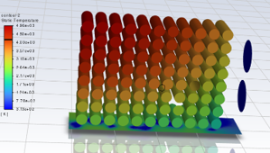
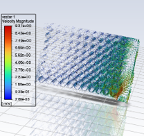
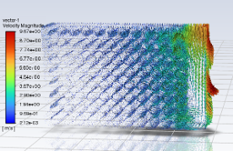
ANSYS Fluent conjugate heat transfer study: airflow distribution and per cell temperatures under a worst case endurance load (1.5× target current for 1.5× race duration). Cells stay below the 60 °C SAE limit even in the compact package.
Fuse Testing
When beginning the fuse design, several geometric constraints had to be considered most notably that the fuse width could not exceed the cell width. Initial calculations revealed that the previously used material, nickel-plated steel, was too resistive to meet the updated electrical requirements. As a result, the design was transitioned to pure nickel to achieve the necessary resistance and cross-sectional targets. The fuse sizing was determined by evaluating Joule heating and comparing the dissipated energy to the material’s melting energy. This analysis assumed minimal heat losses due to conduction and convection, which is reasonable given the short timescales involved. The resulting cross-sectional area provided a strong initial estimate for prototyping. Experimental validation showed excellent agreement with the model, requiring only a minor adjustment of 0.15 mm to meet the final design criteria and the FSAE ruleset
2024 Pack
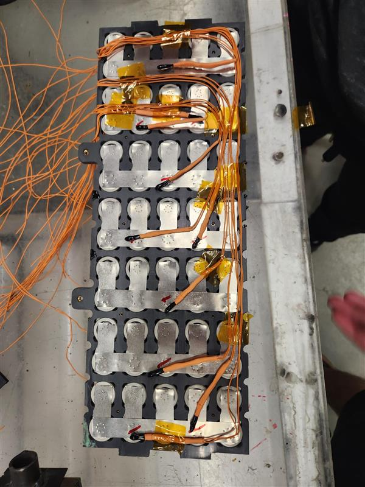
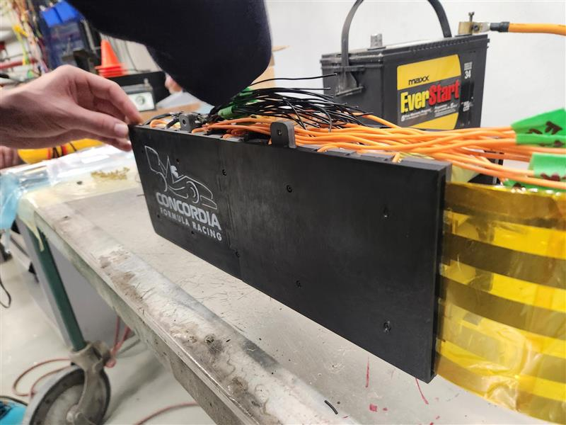
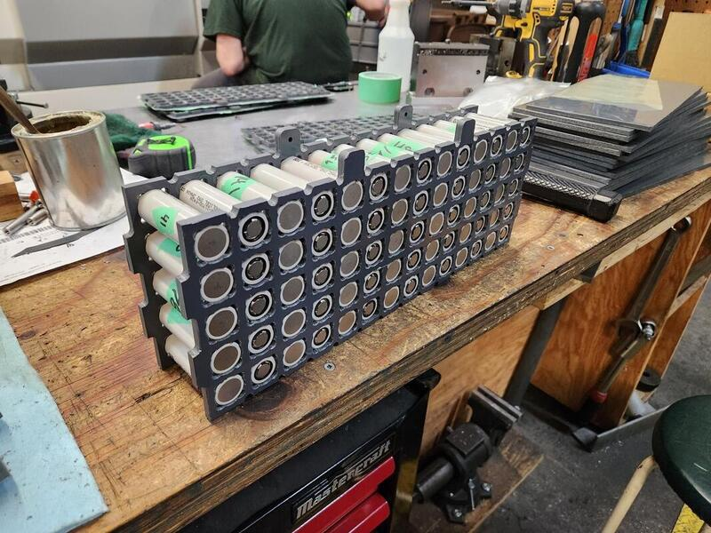